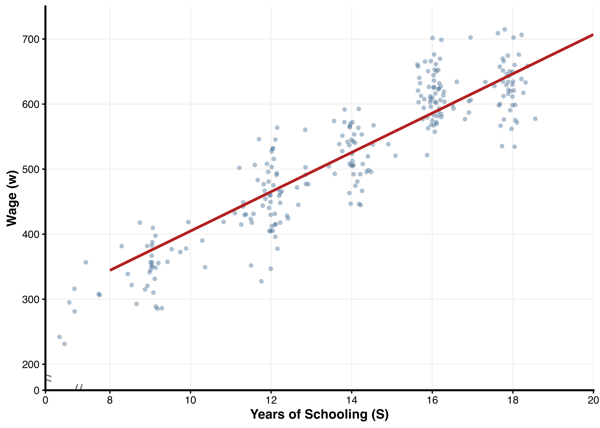
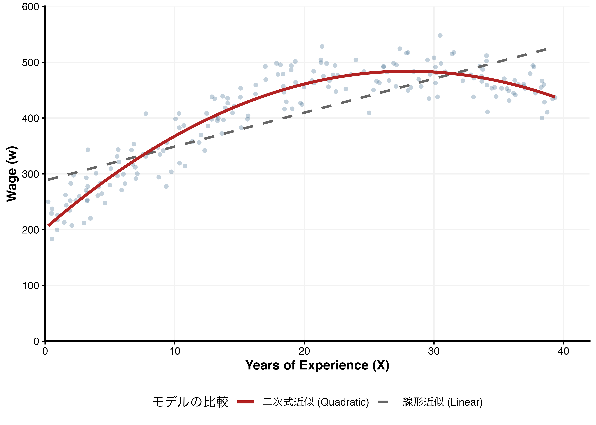

2 人的資本理論
2.1 学習目標
- 人的資本とは何かを説明できる
- 人的資本理論の基本的な考え方を理解する
- ミンサー型賃金関数の考え方を理解する
- 関連実証分析について理解する
（人的資本理論の検証モデルである内部収益率法は次週扱います。）
2.2 人的資本とは
経済学における「資本（capital）」とは、将来の生産や利益を生み出すために用いられる資源のことを指します。
代表的なものとしては、以下のような資本が挙げられます。
- 物的資本（physical capital）：機械、設備、建物など
- 金融資本（financial capital）：資金、株式、債券など
これらの資本は、企業の生産活動や国全体の経済成長において重要な役割を果たします。
たとえば、機械や設備が増えれば、より多くの財やサービスを生産できるようになります。
コブ＝ダグラス型生産関数
マクロ経済学で習う数式に、コブ＝ダグラス型生産関数があります。
\[ Y = K^{\alpha} L^{1-\alpha} \]
この式は、資本と労働がどのように生産に貢献するかを示しています。
- \(\alpha\)：資本の重要度（所得に占める資本の取り分）
- \(1 - \alpha\)：労働の重要度（所得に占める労働の取り分）
ここで、このモデルでは、労働（L）は「量」としてしか扱われていません。
つまり、
- 同じ人数の労働者であれば、誰が働いても同じ生産になる（＝労働者の違いは無視される）
という仮定になっています。
労働は単に「人数」や「労働時間」として扱われています。
拡張型コブ＝ダグラス生産関数
そこで、労働者の質（人的資本）を考慮したモデルが用いられます：
\[ Y = A K^{\alpha} (H L)^{1-\alpha} \]
各変数の意味
- \(Y\)：生産量（GDP）
- \(A\)：全要素生産性（技術水準や制度など、資本と労働では説明できない要因）
- \(K\)：資本ストック
- \(L\)：労働投入量（人数や労働時間）
- \(H\)：労働者の質（人的資本）
- \(HL\)：有効労働量（質で調整された労働）
- \(\alpha\)：資本の所得弾力性（通常0.3〜0.4程度）
この式は、次のことを表しています。
労働は「量」だけでなく「質」によっても生産に影響する
現実には、
- 高度な教育を受けた人
- 熟練した技能を持つ人
の方が、より多くの生産を生み出します。
ここで重要なのは、教育は、\(H\)（人的資本）を高めることで、経済全体の生産性に影響を与えるという点です。
人的資本理論の基本的な考え方
人的資本理論では、教育や訓練を「消費」ではなく、将来の収入を増やすための「投資」として捉えます。
たとえば、
- 大学進学には授業料や時間といったコストがかかる
- しかし、その結果として将来の賃金が上昇する可能性がある
このとき、教育は「将来のリターンを生む投資」と考えられます。
直感的なイメージ
人的資本理論をシンプルに表すと、次のようになります：
教育・訓練 → 人的資本の蓄積 → 生産性の上昇 → 賃金の上昇
Warning
人的資本（human capital）としては、どのような資本が考えられるでしょうか？
個人ワーク（3分）
- 人的資本と考えられるものを可能な限り挙げる
ペアワーク（3分）
- お互いの答えを共有
- 違いを議論
Tip
人的資本
基本的な人的資本
* 知識（例：数学・語学・専門知識）
* 技能（例：プログラミング、接客スキル、プレゼン能力）
* 経験（例：職務経験、OJT、インターン）
* 健康（例：身体的・精神的な健康）
認知能力・非認知能力
* 論理的思考力
* 問題解決能力
* コミュニケーション能力
* 協調性（チームワーク）
* 忍耐力・継続力（グリット）
* 自己管理能力（時間管理、感情コントロール）
教育・資格関連
* 学歴（大学・大学院など）
* 資格（簿記、TOEIC、教員免許など）
* 専門的トレーニング（職業訓練、研修）
労働市場で評価される能力
* ITリテラシー
* データ分析能力
* 語学運用能力（実務レベル）
* リーダーシップ
* マネジメント能力
* 健康習慣（運動、睡眠）
* 家庭環境で身についた習慣
* 文化資本（読書習慣、教養など）
では、「人脈」は人的資本でしょうか？ それとも別の資本でしょうか？
人脈
社会関係資本（social capital）という別の概念があります。2.3 人的資本発展の背景
人的資本理論は、1960年代に突然登場したわけではなく、経済学の歴史の中で徐々に形作られてきた考え方です。その背景には、「教育や技能は経済にとってどのような意味を持つのか」という問いがありました。
まず、その起源は18世紀に遡ります。アダム・スミスは『国富論』（1776年）において、教育や訓練を受けた労働者を「高価な機械」に例えました。これは、教育には費用がかかるものの、それによって将来の収益が生まれるという考え方を示したものです。ここにはすでに、教育を「投資」として捉える発想の原型が見られます。
その後、20世紀初頭になると、アーサー・セシル・ピグーが教育の社会的な役割に注目しました。ピグーは、教育が個人の所得を高めるだけでなく、社会全体の厚生を向上させる可能性があることを指摘しました。これは、教育には外部性（第三者への影響）があるという考え方につながります。
さらに1950年代になると、開発経済学の分野で人的資本の重要性が意識されるようになります。アーサー・ルイスは、発展途上国の経済成長を分析する中で、単に労働者の数が増えるだけでは経済成長を十分に説明できないことを示しました。当時の経済モデルでは、労働は「人数」として扱われており、教育や技能の違いは考慮されていませんでした。しかし現実には、同じ人数であっても、教育水準や技能の違いによって生産性は大きく異なります。この点が、従来の理論の限界として認識されるようになりました。
こうした問題意識を背景として、1960年代に人的資本理論が確立されます。セオドア・シュルツは、教育や訓練、健康への投資が経済成長の重要な要因であると主張しました。これにより、従来は見落とされていた「人への投資」が、経済分析の中心的なテーマとして位置づけられるようになります。
続いて、ゲーリー・ベッカーは、教育を明確に「投資」として理論化しました。教育には授業料や時間といったコストがかかる一方で、将来の賃金上昇というリターンが得られると考え、個人が合理的に教育選択を行うという枠組みを提示しました。これにより、教育は消費ではなく、将来の利益を生む経済行動として分析されるようになりました。
さらに、ジェイコブ・ミンサーは、教育と賃金の関係を実証的に分析しました。ミンサー型賃金関数と呼ばれるモデルを用いて、教育年数や職業経験が賃金にどのように影響するかを定量的に示し、人的資本理論に実証的な裏付けを与えました。
以上の流れをまとめると、従来の経済学では労働は単に「量（人数）」として扱われていましたが、現実には労働者の「質（教育や技能）」が生産性や賃金に大きな影響を与えています。このギャップを埋めるために導入されたのが人的資本という概念であり、それを体系的に説明したのが人的資本理論です。
したがって、人的資本理論は、「労働の質」を経済学の分析に取り込むことで、教育と経済の関係をより深く理解するための枠組みであると言えます。
2.4 人的資本の性質
人的資本は、物的資本とは異なるいくつかの重要な性質を持っています。
ここでは、教育投資の特徴や人的資本の不確実性について整理します。
教育投資の収穫逓減性
人的資本への投資は、一般に収穫逓減（diminishing returns）の性質を持つと考えられています。
これは、教育や訓練を追加的に受けるほど、その効果（賃金上昇や生産性向上）が次第に小さくなるという考え方です。
たとえば、
- 義務教育を修了することで、基礎的な読み書き・計算能力が大きく向上する
- しかし、その後にさらに教育年数を1年延ばしても、同じだけ大きな効果が得られるとは限らない
このように、教育投資の初期段階では効果が大きく、次第に効果が小さくなると考えられます。
この性質は、次のような意思決定にも関係します。
- どの段階まで教育を受けるべきか
- 追加的な教育投資は合理的か
これらは次週学ぶ「内部収益率」と密接に関係します
人的資本の異質性と不確実性
人的資本には、個人ごとに大きな違い（異質性）があり、さらに将来の成果には不確実性が伴います。
異質性
- 人によって得意分野や能力が異なる
- 同じ教育を受けても、成果（スキル・賃金）は異なる
不確実性
- どの教育が自分にとって最適かは、事前には完全には分からない
- ある分野に進学しても、自分に向いていない可能性がある
- 将来どのスキルが求められるかは変化する
このため、
- 初等・中等教育では幅広い共通科目を学び
- その後、徐々に専門分野を選択していく
という教育制度が採用されています。
教育は「試行錯誤のプロセス」でもあります。
2.5 企業から見た人的資本
これまで個人の視点から人的資本を見てきましたが、
ここでは企業の視点から考えます。
人的資本は、その性質によって大きく2つに分類されます：
一般的人的資本（general human capital）
→ どの企業でも通用する技能（例：語学、ITスキル）企業特殊的人的資本（specific human capital）
→ 特定の企業でのみ役立つ技能（例：社内システム、独自の業務プロセス）
人的資本への投資と収益
人的資本への投資は、「誰が費用を負担するか」という問題と密接に関係します。
一般的人的資本の場合
- 労働者が転職すると、他の企業でもその技能が活用できる
- 企業は投資しても回収できない可能性が高い
→ 個人が教育費用を負担する傾向があります。
（例：大学進学、資格取得）
企業特殊的人的資本の場合
- 他の企業では役に立たない
- 転職すると価値が失われる
→ 企業が投資費用を負担しやすい傾向があります。
（例：社内研修、OJT）
企業特殊的人的資本と雇用の関係
企業特殊的人的資本は、雇用関係にも大きな影響を与えます。
企業側の視点：
- 投資した人的資本を回収するため
→ 長期雇用を望む
労働者の視点：
- 他社では価値が低い
→ 転職しにくい
その結果：
長期雇用関係（日本型雇用など）が成立しやすい
労使間における人的資本の投資費用分担
現実には、人的資本への投資費用は、企業と労働者の間で分担されることが多いです。
- 企業が研修費用を負担する代わりに、低い初任給を設定する
- 労働者が自己負担で資格を取得する
このように、人的資本投資の費用と収益は、労使間でどのように分担されるかが重要な問題 となります。
人的資本の性質まとめ
- 教育投資には収穫逓減性がある
- 人的資本には異質性と不確実性がある
- 人的資本は「一般」と「企業特殊」に分類される
- 投資費用の負担は、その性質によって異なる
Warning
あなた自身の「人的資本」を整理してみましょう。
- あなたが現在持っている人的資本を書き出してください
- それらを次の2つに分類してください
- 一般的人的資本（どの企業でも役立つ）
- 企業特殊的人的資本（特定の環境でのみ役立つ）
- 今後、どの人的資本に投資したいですか？
理由も考えてください。
個人ワーク（5分）
- できるだけ具体的に書く
（例：「英語」ではなく「TOEIC 700点」など）
ペアワーク（5分）
- お互いのポートフォリオを比較
- 「なぜそれに投資したいのか」を議論
人的資本の例（ヒント）
- 知識
- 専門分野（経済学、経営学など）
- 語学（英語、中国語など）
- 資格（簿記、ITパスポートなど）
- 専門分野（経済学、経営学など）
- 技能
- ITスキル（Excel、プログラミング、データ分析）
- プレゼンテーション能力
- コミュニケーション能力
- ITスキル（Excel、プログラミング、データ分析）
- 経験
- アルバイト（接客、マネジメント経験など）
- インターンシップ
- 留学・海外経験
- アルバイト（接客、マネジメント経験など）
- 非認知能力
- 粘り強さ（グリット）
- 協調性
- 主体性・リーダーシップ
- 粘り強さ（グリット）
- 健康
- 体力
- メンタルの安定
- 体力
Tip
2.6 ミンサー型賃金関数
人的資本の蓄積が賃金に与える影響を計量的に分析する枠組みとして、ミンサー型の賃金関数があります。
賃金と教育
今、単純化のために次のように考えます。
- 人はある年齢まで教育を受ける
- 教育によって知識・技能（＝人的資本）を獲得する
- その能力に応じて賃金が決まる
まず、教育によって得られる能力が教育年数に比例すると仮定します。
また、賃金はその能力に比例して決まると考えると、次のような関係が想定されます。
\[ w = \beta_0 + \beta_1 S \]
ここで、
- \(w\)：賃金
- \(S\)：教育年数（Schooling）
つまり、このようなイメージです。以下はあくまでもイメージ図です。
さらに、教育の効果は「加法的」ではなく「比例的（率）」に効くと考えると、対数を取った次の形が自然です：
\[ \ln w = \beta_0 + \beta_1 S \]
教育年数が1年増えると、賃金が一定割合（％）で増加することを意味します。
Noteなぜ対数を取るのか？
対数を取る理由は主に2つあります：
- 解釈が容易になる
- \(\beta_1\) は「教育1年あたりの賃金の％変化」を意味する
- 現実に近い仮定になる
- 賃金は「差」ではなく「割合」で増えることが多い
（例：年収200万円 → 210万円 と
年収1000万円 → 1010万円 は意味が異なる）
経験の導入
しかしながら、実社会においては、教育だけでなく労働市場での経験を通じて能力が高まることが一般的です。
したがって、賃金は経験にも依存すると考えられます：
\[ \ln w = \beta_0 + \beta_1 S + \beta_2 X \]
ここで、
- \(X\)：労働市場経験（Experience）
収穫逓減の導入
さらに、経験の効果は常に一定ではありません。
- 若い頃：急速にスキルが向上 → 賃金も大きく上昇
- 中高年：成長は緩やか → 賃金の上昇も鈍化
つまり、経験の効果は逓減すると考えられます。
これを表現するために、経験の二乗項を導入します：
\[ \ln w = \beta_0 + \beta_1 S + \beta_2 X + \beta_3 X^2 \]
ここで通常、
- \(\beta_2 > 0\)
- \(\beta_3 < 0\)
となり、賃金は経験に対して逆U字型の関係を持ちます。
つまり、このようなイメージです。以下はあくまでもイメージ図です。

まとめ
以上をまとめると、賃金は次のように表されます：
\[ \ln w = \beta_0 + \beta_1 S + \beta_2 X + \beta_3 X^2 + \varepsilon \]
- \(\varepsilon\)：観測されない要因（能力、家庭環境など）
この形の関数がミンサー型賃金関数と呼ばれます。
Note実証分析での拡張
実際の研究では、この基本形に加えて様々な変数が追加されます。
- 性別
- 学歴ダミー（大学卒かどうかなど）
- 職業・産業
- 地域
ただし基本的な発想は同じで、「教育と経験が賃金にどう影響するか」を推定します。
2.7 エクセルでの演習
デモンストレーションで使用するファイルを、こちらからダウンロードしてください。
分析結果
エクセルを用いた回帰分析の結果、以下の推定式が得られました。
\[ \ln w = 5.113 + 0.073 S + 0.027 X - 0.0004 X^2 \]
（※ \(w\): 賃金, \(S\): 教育年数, \(X\): 経験年数）
各係数の解釈
実証分析から得られた各数値は、以下のような経済学的な意味を持っています。
- 教育年数の係数 (\(0.073\))
- 教育年数が1年増えるごとに、賃金が約7.3%上昇することを意味します。
- これが人的資本理論で重視される「教育の収益率」です。
- 教育年数が1年増えるごとに、賃金が約7.3%上昇することを意味します。
- 経験年数の係数 (\(0.027\))
- キャリアの初期段階において、経験が1年増えるごとに賃金が約2.7%上昇する傾向を示しています。
- 経験年数二乗の係数 (\(-0.0004\))
- この値がマイナスであることが非常に重要です。
- 経験年数が増えるほど賃金の伸び率が鈍化し、最終的に賃金カーブが「逆U字型」を描くことを数学的に裏付けています。
- この値がマイナスであることが非常に重要です。
Note予測
この式に想定する人の値をを代入すれば、その人の賃金を予測することができます。
例えば、大学卒業（\(S=16\)）して10年働いた（\(X=10\)）ときの賃金 \(\ln w\) は、以下のように計算できます。
\[ \begin{aligned} \ln w &= 5.113 + 0.07 \times 16 + 0.027 \times 10 - 0.0004 \times 10^2 \\ &= 6.511 \end{aligned} \]
\[e^{6.511} \times 10 \approx 672.5 \text{ 万円}\]
Warning
ここまで、ミンサー型賃金関数について学んできましたが、ミンサー型賃金関数も万能ではありません。どのような問題点があるか、考えてみましょう。
個人ワーク（3分）
- ミンサー型賃金関数の問題点を考える
ペアワーク（3分）
- お互いの答えを共有
- 違いを議論
Tip

2.8 限界と注意点
ミンサー型賃金関数は非常に強力なツールですが、その解釈にはいくつかの重要な注意点があります。実証分析を行う際には、以下の問題点を考慮する必要があります。
教育の収益率の一定性（線形性の仮定）
基本モデルでは、人的資本の収益率が人的資本の水準に関わらず \(\beta_1\) で固定されています。
また、対数線形モデルでは、教育年数が1年増えるごとに賃金が一定割合（％）で増加すると仮定しています。
- 問題点
小学校での1年間と、大学での1年間が、賃金に与える「率」の効果として同じように扱われています。 - 現実
教育段階（初等・中等・高等教育）によって収益率が異なる可能性や、特定の学位（大学卒業など）を取得すること自体に大きな意味がある場合などは、この単純なモデルでは捉えきれません。
※ 実証分析では、学歴ダミー変数を用いたり、教育年数の非線形性を考慮するなどの拡張が行われることが一般的です。
観測されない異質性と能力バイアス
教育の収益率が、必ずしも「教育そのものの純粋な効果」を推定できていない可能性があります。
- 問題点
教育年数が長い人は、もともと学習能力が高かったり、家庭・社会環境に恵まれていたりする傾向があります。 - 懸念
そのような人々は、仮に高い教育を受けなかったとしても、その能力や背景によって高い賃金を得ていたかもしれません。この「もともとの能力（能力バイアス）」の影響を排除しない限り、教育の効果を過大評価してしまう恐れがあります。
※ 一般に、能力が高い人ほど教育年数も長く、賃金も高くなる傾向があるため、このバイアスは教育の収益率を上方に歪める可能性があります。
自己選択（セレクション）の問題
進学の意思決定は、個人の合理的な判断に基づく「自己選択（Self-selection）」の結果です。
- 問題点
- 高卒で働き始めた人は、「大学に行くよりも今働く方が有利だ」と判断した可能性があります。
- 大学に進学した人は、「大学に行く方が将来的に有利だ」と確信があるからこそ投資を行っています。
- 結論
このように、各自が自分にとって有利な道を選んだ結果として得られたデータ（サンプル）で推計を行うと、教育の効果が実際よりも上振れして推定される「セレクション・バイアス」が生じる可能性があります。
※ セレクションの問題は、個人が自身の期待収益に基づいて教育選択を行うことから生じます。そのため、「教育が賃金を高めた」のか、「賃金が高くなる人が教育を選んだ」のかを区別することが難しくなります。
※ これらの問題に対処するために、近年の研究では、操作変数法（IV）や自然実験、ランダム化比較試験（RCT）などの因果推論手法が用いられています。
2.9 実証研究外観
人的資本理論やミンサー型賃金関数は、世界中で膨大な実証研究によって検証されてきました。
ここでは、日本と海外の代表的な研究成果を紹介します。
日本の実証研究
日本の場合、ほとんど人が高校までは卒業することから、分析の対象は高校以上になることがほとんどです。
1990年代以降、様々なデータセットを用いた分析が行われ、日本の私的教育投資収益率は概ね 7%から11% の範囲に収まるとされています。以下の表は、「概説教育経済学（松塚ゆかり・日本評論社）」からの抜粋です。
| 分析者（年） | 対象期間 | 対象・区分 | 収益率（主な結果） |
|---|---|---|---|
| 田中 (1994) | 1966–1989年 | 男子（大卒） | 9%から7%へ減少傾向 |
| 荒井 (1995) | 1965–1985年 | 男子（大卒） | 8.65%から6.58%へ減少傾向 |
| Arai (1998) | 1974–1993年 | 大学（男子） | 9.91%から8.83%へ減少 |
| 短大（女子） | 11.44%から8.53%へ減少 | ||
| 島 (2008) | 1975–2003年 | 男子 | 1990年代後半から増加（6.5%〜8.0%） |
| 女子 | 1990年代前半から増加（9.5%〜11.5%） | ||
| 岩村 (1996) | 1992年 | 男子 | 社会科学系：7.79%〜10.49% 理工学系：8.07%〜8.99% |
| 経済企画庁 (1998) | 1994年 | 国立大学 | 6.8% |
| 私立大学 | 5.9% | ||
| 島 (2017) | 1999年 | 国立大学（平均） | 8.6% |
| 私立大学（平均） | 6.5% | ||
| 難関私立（偏差値55以上） | 8.7% | ||
| 低偏差値校（45以下） | 5.0% | ||
| Ono (2004) | 1995年 | 大学1年間 | 8.7% |
| 矢野・島 (2000) | 1965年 / 1995年 | 平均収益率（初等〜高等） | 10.2%（1965年）→ 8.5%（1995年） |
| 濱中 (2009) | - | 専修学校（女子） | 有資格職に就く場合、大学卒業者よりも教育効果が高いケースがあることを解明 |
文献リスト
- Arai, K. (1998) “The Economics of Education: An Analysis of College-Going Behavior,” Journal of the Japanese and International Economies
- 荒井 一博 (1995) 『教育の経済学―大学進学行動の分析』 有斐閣
- 岩村 美智恵 (1996) 「高等教育の私的収益率―教育経済学の展開」『教育社会学研究』 第58集
- 経済企画庁経済研究所 (編) (1998)** 『エコノミストによる教育改革への提言―「教育経済研究会」報告書』 大蔵省印刷局
- 島 一則 (2008) 「大学進学の経済的効果についての実証分析」塚原修一編『高等教育の現代的変容と多面的展開』
- 島 一則 (2017) 「国立・私立大学別の教育投資収益率の計測」『大学経営政策研究』 第7号
- 田中 宏 (1994) 「戦後日本の大学教育需要の時系列分析―内部収益率理論の再考察」『経済経営論叢』 第28巻4号
- 濱中 淳子 (2009) 「専修学校卒業者の就業実態―職業教育に期待できる効果の範囲を探る」『日本労働研究雑誌』 No. 588
- 矢野 眞和・島 一則 (2000) 「学歴社会の未来像―所得からみた教育と職業」近藤博之編『日本の階層システム 3 戦後日本の教育社会』 東京大学出版会
- Ono, H. (2004) “Does Examination Hell Pay Off? A Cost-Benefit Analysis of ‘Ronin’ and College Education in Japan,” Economics of Education Review
海外の実証研究
人的資本理論の妥当性を検証するため、Patrinos and Psacharopoulos (2026) は世界54カ国、145の研究から得られた191の推計値を統合し、最新の知見を報告しています。
世界全体で見ると、教育投資の収益率は一貫して高い水準にあります。
| 国の所得グループ | OLS推計（相関） | IV推計（因果） | 推計数 (N) |
|---|---|---|---|
| 高所得国 (HIC) | 6.6% | 8.4% | 25 |
| 中所得・低所得国 (LDC) | 8.1% | 12.5% | 29 |
| 低所得国 (LIC) | 10.3% | 11.7% | 3 |
| 全世界平均 | 7.1% | 9.8% | 54 |
文献リスト
Patrinos, H. A., & Psacharopoulos, G. (2026) “Causal returns to education,” International Journal of Educational Development, 122, 103565.
まとめ
実証研究から得られる重要な結論は以下の通りです：
- 教育は賃金を上昇させる傾向がある（ほぼ一貫した結果）
- 教育の収益率は国や制度によって異なる
- 因果推論を用いた研究でも、教育の効果は概ね確認されている
- ただし、その大きさはバイアスや制度によって変化する
したがって、
人的資本理論は実証的にも強く支持されているが、その解釈には慎重さが必要
と言えます。
2.10 授業の感想（ワークシートから）
今日の授業では人的資本とミンサー型賃金関数を学び、教育や経験だけで賃金が決まるという考えは少し単純だと思った。実際には、能力や環境など他の要因も大きいと思う。ただ、考え方としては分かりやすく、基礎として役に立つと感じた。
就職活動の際に、特殊資本と一般資本は何かを見極めようと思った。
教育の効果が地域や個人によって違うことと、基の能力かそうでないかを見極める関数が欲しくなった。
資本は常に効率を追求し、人の効率は質と量で現れます。人の能力は学歴や生まれもった心身の素質に左右されます。人材の質を明確にした上で、生産ニーズに合わせて人数を決め、コスト削減と効率アップを図ります。これが私の考える人的資本理論です。